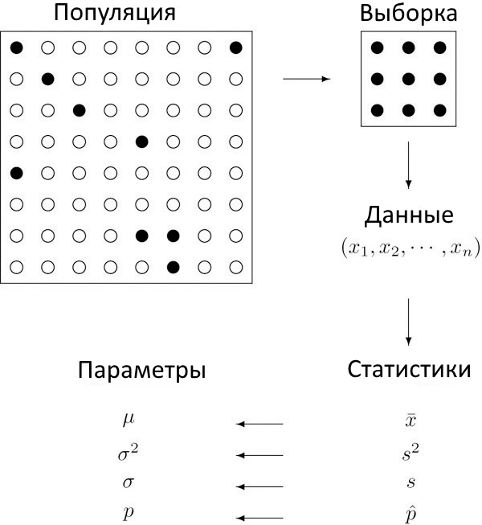

Статистика. Часть 1. Введение в статистику
Основные понятия статистики
Начнём с небольшого примера: в мире более 7.5 миллиардов человек, каждый из которых имеет какой-либо рост. Как мы можем узнать средний рост человека? Очевидно, измерять каждого человека - очень плохая идея. Вместо этого мы можем взять лишь часть всех людей, скажем, 800 и найти среднее для них. Все люди в данном случае называется генеральной совокупностью, а те из них, которые мы выбрали для исследования, будут называться выборкой этой генеральной совокупности. Если мы измерим рост всех людей в генеральной совокупности, то такие значения будут называться параметрами, а измерив рост людей в выборке, получим статистики.Определение
Генеральная совокупность (population) - любая интересующая нас группа объектов: люди, машины,
растения, бактерии определённого вида и тд.
Определение
Выборка (sample) - любое подмножество генеральной совокупности
(выборка также может включать в себя всю генеральную совокупность)
Определение
Измерение (measurement) - это число или свойство, измеренное для каждого члена генеральной
совокупности или
выборки. Все измерения выборки называются данными выборки (sample data)
Определение
Параметр (parameter) - число, обобщающее какое-либо свойство генеральной совокупности
Определение
Статистика (statistic) - число, вычисленное на основе данных выборки
Продолжая наш пример, если средний рост людей в нашей выборке составит 168см, то мы можем предположить что это средний рост всех людей в целом. То есть мы делаем предположение о генеральной совокупности на основании нашей выборки. Взаимосвязь всех этих понятий видна на следующей картинке:

У нас есть генеральная совокупность, мы создаём из неё выборку, затем проводим измерения нашей выборки и получаем данные, после чего, анализируя данные, мы получаем некие статистики, характерные для нашей выборки и обобщаем результаты исследования получая параметры для всей генеральной совокупности.
Обобщая, можно сказать что статистика это наука о данных и делится на две основные ветви: описательную статистику, целью которой является описание свойств данных и индуктивную статистику, целью которой является обобщение данных, полученных из выборки на всю генеральную совокупность.
Определение
Статистика (statistics) - как наука - совокупность методов сбора, отображения, анализа данных
Определение
Описательная статистика (descriptive statistics) - ветвь статистики, задачами которой являются
организация, отображение и описание данных
Определение
Индуктивная статистика (inferential statistics) - ветвь статистики,
задачей которой является обобщение данных, полученных из выборки на всю генеральную совокупность.
Стоит сказать что измерения, полученные в ходе ислледования не обязательно должны быть числовыми. Например, мы можем учитывать пол человека: мужской и женский. Очевидно что его не нужно описывать какими-то числами (хотя сделать это мы можем). Слледовательно, данные мы можем разделить на 2 больших типа: количественные и качественные.
Определение
Качественные данные (qualitative data) - это измерения, для которых нет числовой шкалы, они
описываются различными нечисловыми значениями, например, метками.
Определение
Количественные данные (quantitative data) - числовые значения, то есть те, которые мы можем
расположить на числовой шкале.
Из количественных данных мы можем получить количественные статистики выборки (такие как среднее).
Популярные способы представления данных
Итак, вы измерили какую-то характеристику вашей выборки и теперь вам нужно как-то представить ваши данные для последующего анализа. В этих статьях мы будем пользоваться двумя способами. Первый - это так называемый список данных (data list). Список данных - это простое перечисление всех измерений для выборки:Пример
Возраст 21 случайных студентов СПбГАУ может быть представлен так:
или так:
Набор данных также может быть представлен таблицей частот (data frequency table) - это таблица, где указан - конкретное значение и соответствующая частота (то есть количество этого значения в нашем наборе).
Пример
Перепишем представленные выше данные в виде таблицы частот:
Соответственно, у нас 2 раза встречается 17, 8 раз - 18 и так далее.
Упражнения
-
Определите, что является выборкой, а что - генеральной совокупностью
- Средние оценки всех студентов колледжа
- Средние оценки случайной группы студентов колледжа
- Пол каждого второго посетителя театра
-
Определите, какие измерения являются качественными, а какие - количественными
- Баллы ЕГЭ 40 школьников
- Группы крови 120 учителей
- Пол учеников 9-ого класса
- Цвет волос 20 случайно выбранных моделей
- Возраста 20 случайно выбранных моделей
-
Исследователь решил выяснить средний вес новорождённых в Южной Америке за последние 5 лет.
Он взял случайную выборку из 235 новорождённых и обнаружил что средний вес 3.27 килограмм
- Что является генеральной совокупностью?
- Что является параметром?
- Основываясь на выборке знаем ли мы средний вес новорождённых в Южной Америке?
- Преобразуйте список к таблице частот:
- Преобразуйте таблицу частот к списку:
Ответы
-
Определите, что является выборкой, а что - генеральной совокупностью
- Генеральная совокупность
- Выборка
- Выборка
-
Определите, какие измерения являются качественными, а какие - количественными
- Количественные
- Качественные
- Качественные
- Качественные
- Количественные
-
Исследователь решил выяснить средний вес новорождённых в Южной Америке за последние 5 лет.
Он взял случайную выборку из 235 новорождённых и обнаружил что средний вес 3.27 килограмм
- Все новорождённые Южной Америки за последние 5 лет
- Средний вес всех новорождённых Южной Америки за последние 5 лет
- Нет, мы знаем лишь приблизительное среднее веса
- Преобразуйте список к таблице частот:
- Преобразуйте таблицу частот к списку: